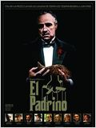
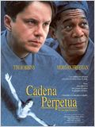
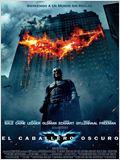
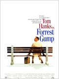
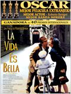
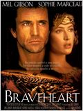
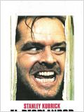

Mis 10 Películas Favoritas
Por Antxon Eguiguren
Actualizado a día 30 de Octubre de 2019
- El Padrino

- La Lista de Schindler

- Cadena Perpetua

- El Caballero Oscuro

- Pulp Fiction

- Forrest Gump

- La Vida es Bella

- Braveheart

- El Silencio de los Corderos
- El Resplandor

Tras la votación, puedes ver aquí la lista de las 5 mejores películas según todos mis amigos.